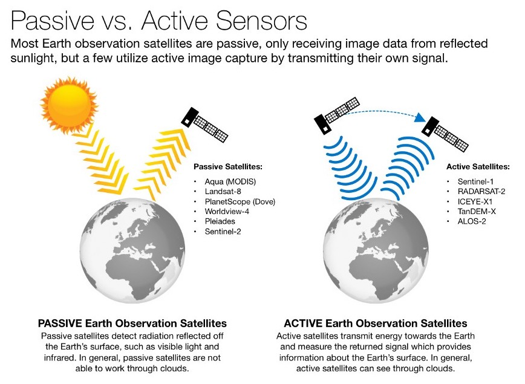
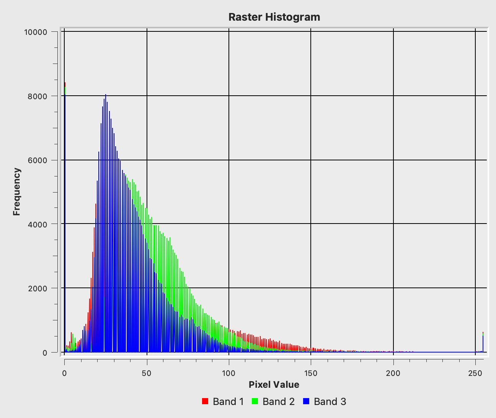
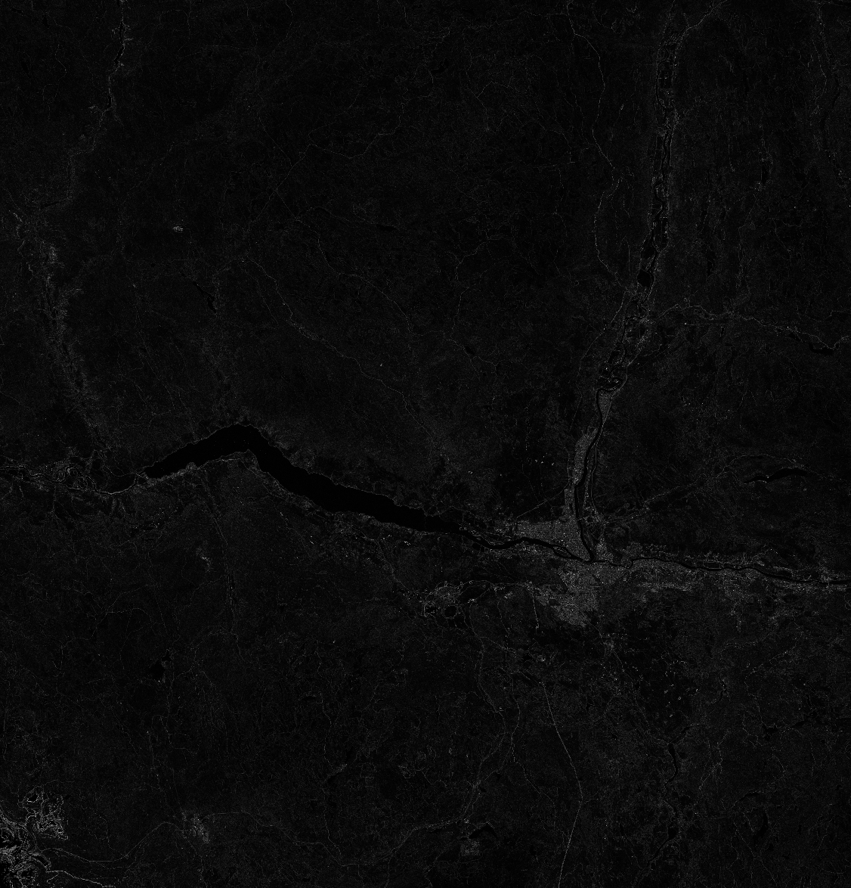
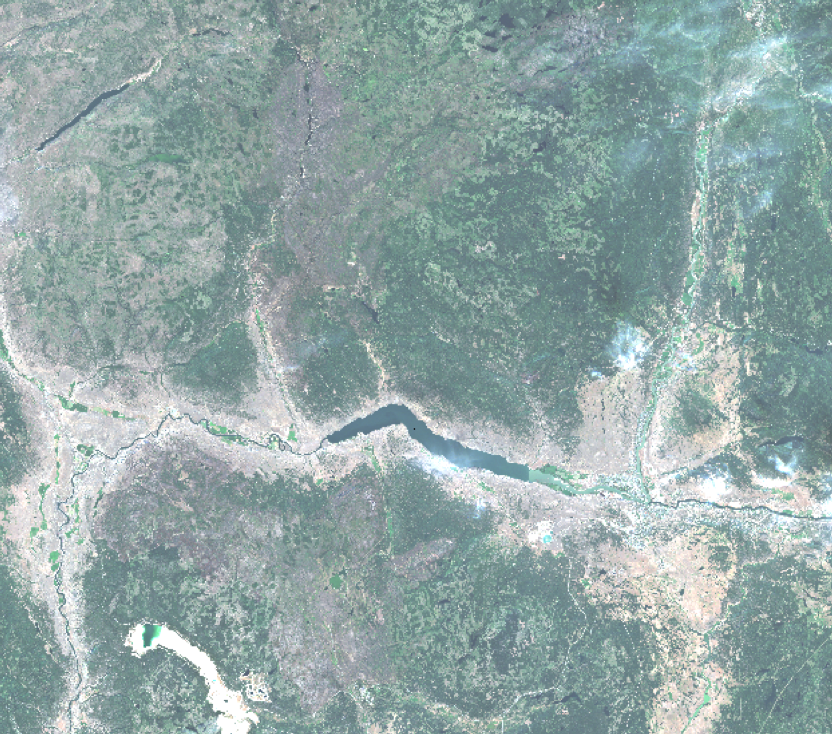
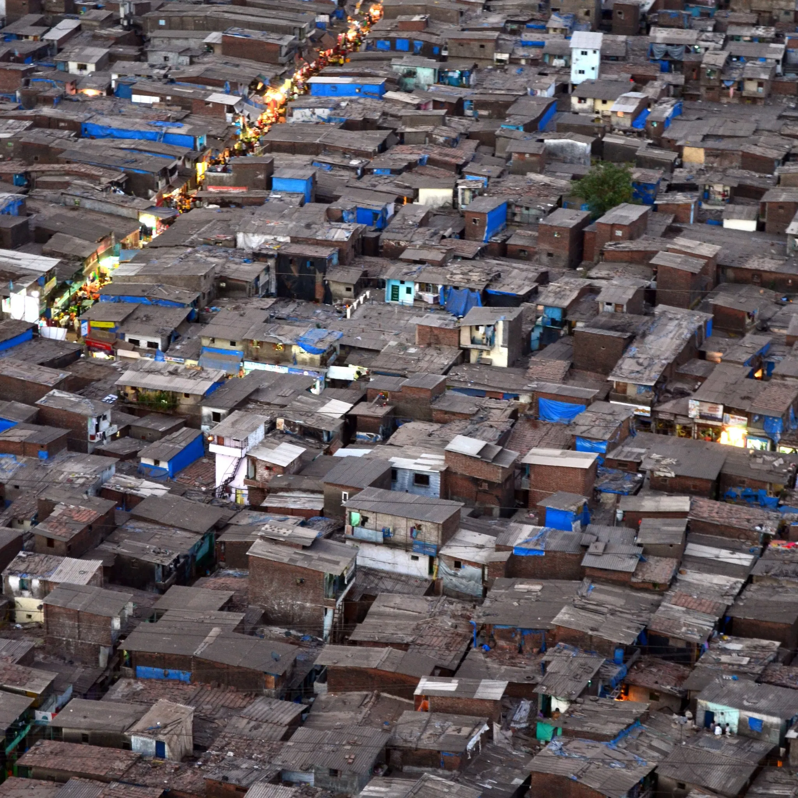

2 Week 1
3 Introduction to Remote Sensing
3.1 Summary
Remote Sensing is a subset of Geographic Information Systems. It is the science of collecting & analysing information about the earth’s surface through the use of sensors mounted on satellites or planes (Olsen 2007).
The value of Remote Sensing spans various fields. It provides critical data for environmental monitoring, disaster management and urban development to name a few (Cracknell 2018). This week we learned about basic concepts in remote sensing and conducted some rudimentary analysis in R and SNAP (a QGIS for remote sensing data). Below I’ll provide an overview of the technology, its applications and my reflections on the potential of remote sensing.
We were introduced to two satellite programmes this week: Landsat and Sentinel. Sentinel-2 data offers a spatial resolution of 10 meters compared to Landsat’s 30 meters creating more detailed observations. Sentinel-2 satellite orbit every 5 days and offer more frequent updates than Landsat’s 16-day cycle. This makes Sentinel-2 particularly valuable for monitoring fast-changing conditions on the Earth’s surface (Claverie et al. 2018). For example the Dynamic World programme is a near real-time land cover dataset that uses satellites to monitor changes in Earth’s surface.
3.1.1 There are two types of sensors: Active & Passive
Active sensors emit energy in the form of radiation, then detect and measure the radiation that is back scattered or reflected back up to the satellite. An example is SAR (Kreucher, Kastella, and Hero 2005).
Passive sensors measure natural energy reflected or emitted from Earth, without actively emitting any signal of their own (Liu 2013). An example is the Landsat programme, which captures the Earth’s surface in the visible, near-infrared and thermal infrared wavelengths. This is illustrated below:
Source: Geospatial World
3.1.2 How Remote Sensors Store Data
Remote sensing technology captures data about Earth’s surface and atmosphere by detecting electromagnetic signatures, which are distinct patterns of energy radiated or reflected (NASA 2024).
Data from remote sensing are stored with attention to different types of resolution. Each provides unique insights into the Earth’s physical characteristics.
Spatial resolution indicates the smallest visible feature in an image. Higher resolution reveals finer details
Spectral resolution is a sensor’s ability to distinguish light wavelengths, critical for identifying materials
Temporal resolution measures how often an area is imaged, important for tracking changes over time
Radiometric resolution reflects a sensor’s sensitivity to light intensity, aiding in detecting subtle variations
Source: Verde, 2018
3.2 Applications
From my perspective, remote sensing gives us a way to see and understand changes on our planet that we couldn’t easily detect from the ground. My initial perspective was that RS data revolved around natural phenomena and climate related changes. The following two examples highlighted the utility of remotely sensed data in humanitarian and disaster management contexts.
3.2.1 Tracking the Growth of Refugee Camps
Sentinel-2 imagery, humanitarian organisations mapped the rapid expansion of Rohingya refugee camps, facilitating efficient aid distribution, infrastructure planning, and risk management. This data was instrumental in adapting emergency responses and optimising resource allocation as the camp situation evolved (Braun, Falah, and Hochschild 2019).
3.2.2 Investigating the Suez Canal Blockage by the Ever Given 2021
Sentinel-2 images provided clear views of the ship’s position and the traffic jam of vessels waiting to pass through the canal. These images were crucial for assessing the blockage and its impact on global trade (Niroumand-Jadidi and Bovolo 2021)
3.2.3 Using Sentinel Application Platform (SNAP)
SNAP is a tool used to process and analyse remote sensing data. There are a variety of basic statistics you can generate on SNAP.
3.2.4 Sentinel-2 Imagery on my Hometown (Kamloops, BC, Canada)
After experimenting in QGIS a I was able to extract the spatial signature alongside some indices of the area. Below the Terrain Ruggedness Index and the Spectral Signature of the imagery


Here, I have built a true-colour composite from the red, green, and blue bands of the Sentinel-2 imagery.

3.3 Reflections
The potential of remote sensing to explore humanitarian issues was very eye opening to me, especially after reading a CASA staff member’s (Ollie Ballinger) contributions to Bellingcat, an investigative news outlet which specialises in disaster and war crimes. This technology’s utility extends beyond monitoring natural events to probing human-related issues, including human rights abuses, war crimes and informal settlements.

Source: IDEAtlas
This technology was deeply fascinating to me from an academic and commercial perspective. From an academic perspective, the concept of extracting immense amounts of data from imagery is revolutionary. Spectral signatures, like unique fingerprints for different Earth materials based on how they reflect light, enable us to understand the composition and health of various elements from afar. This capability is crucial for fields such as agriculture and environmental monitoring, illustrating how deep scientific research translates into practical applications across industries.
After reading about the applications of Remote Sensing, it is clear that its potential has not been completely tapped into. The field is still in its early stages only from a commercial perspective, primarily finding application within academic and research settings. The processing of Satelite Imagery prior to Google Earth Engine seems to be slow and tedious. GEE itself was only release to th public in 2010. This gap between academic research and commercial application presents a vast opportunity for innovation and implementation in various industries.
This week has been a great intro to Remote Sensing and has whet my appetite for the coming weeks.